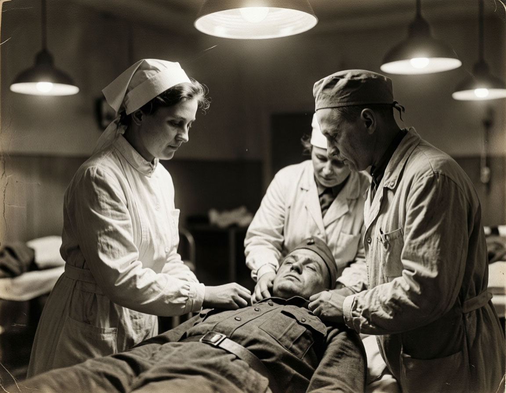
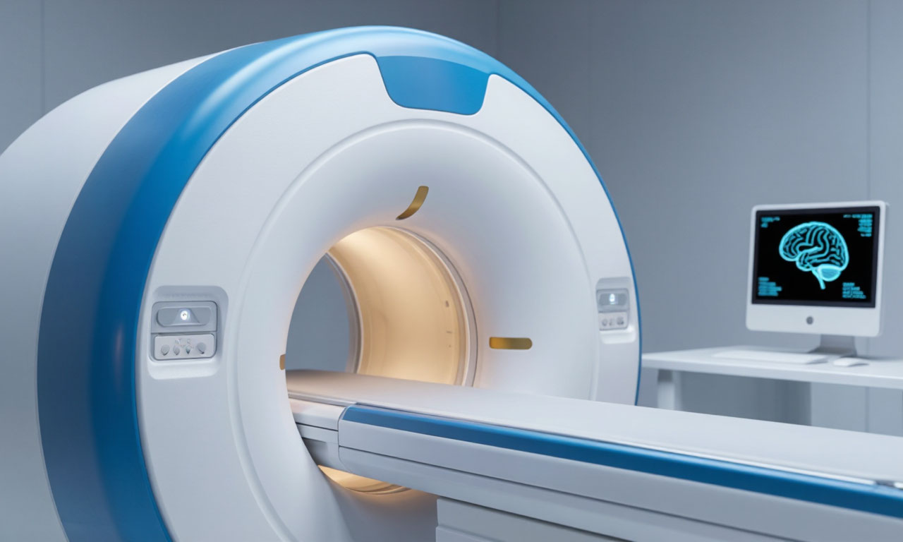
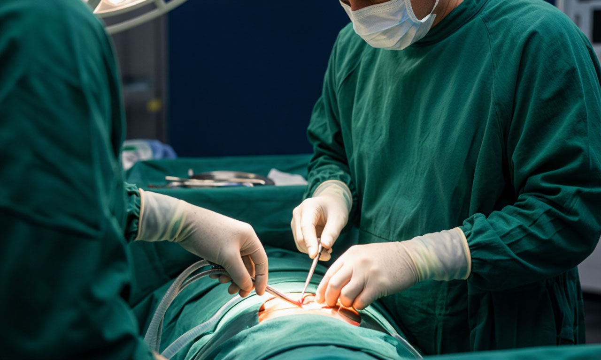
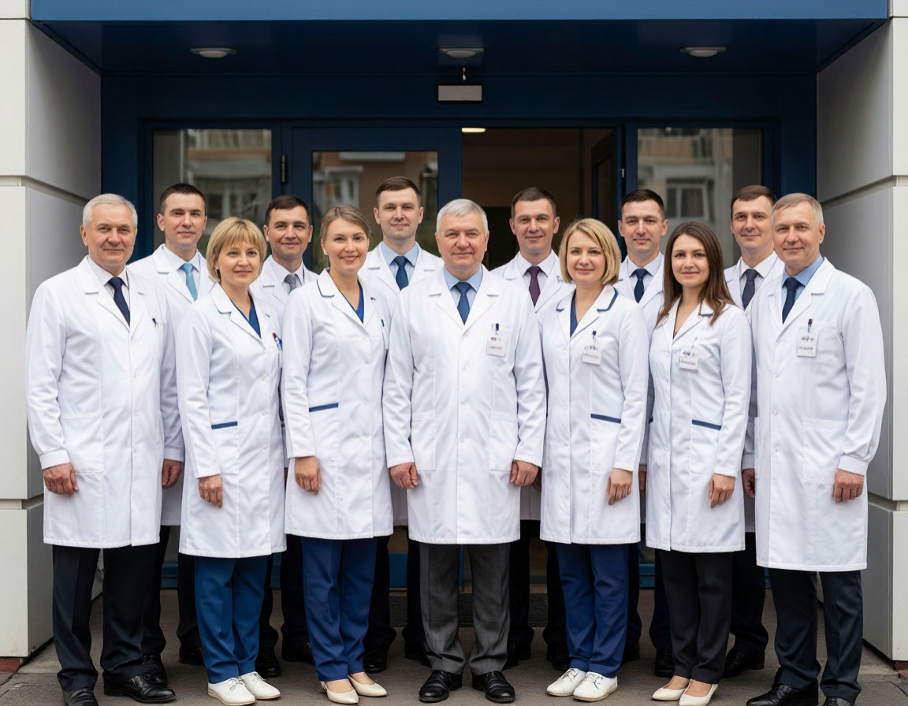
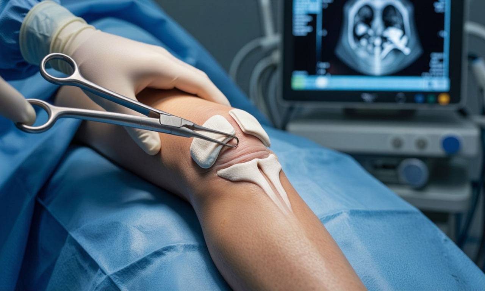
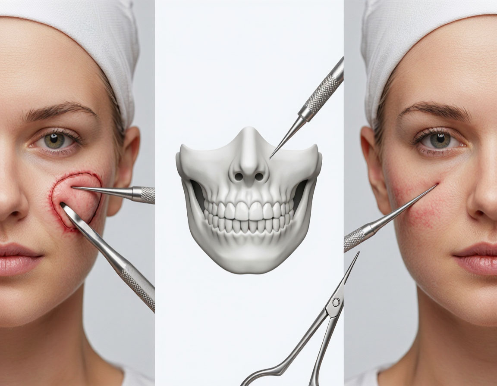
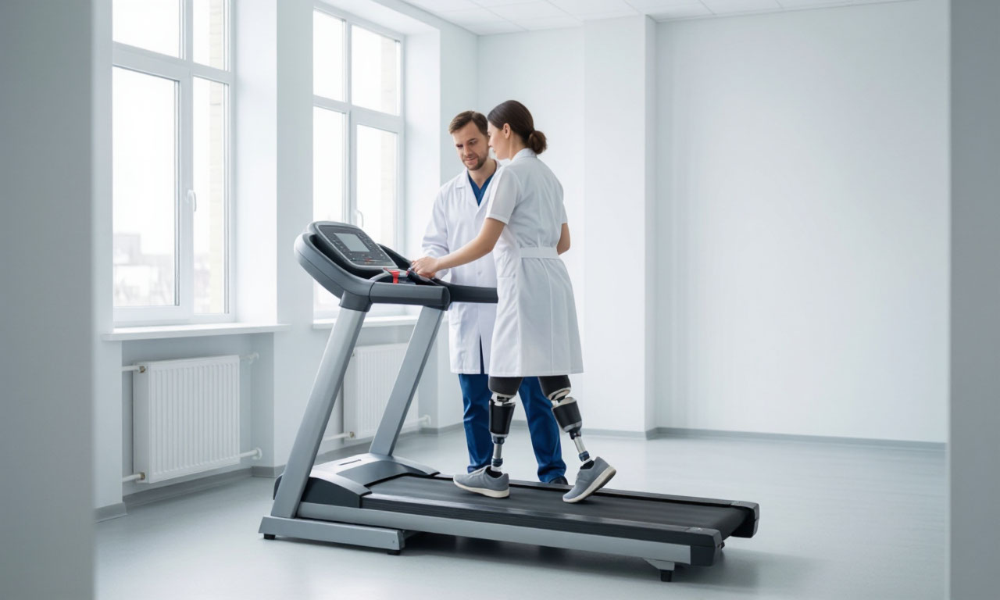
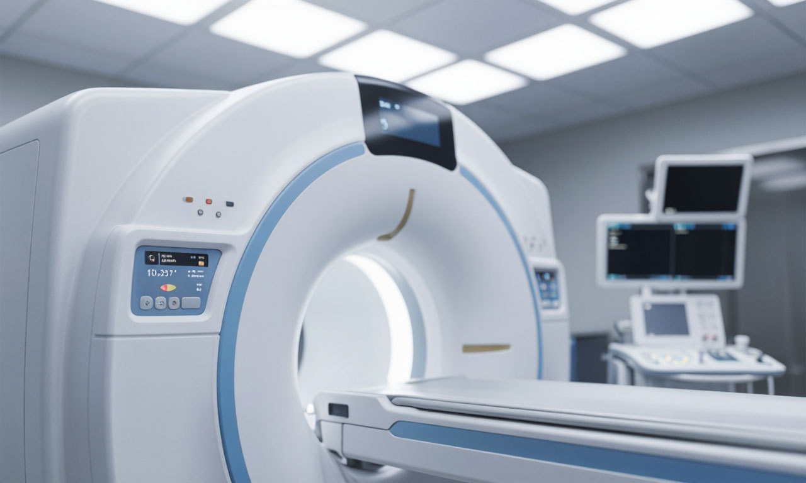
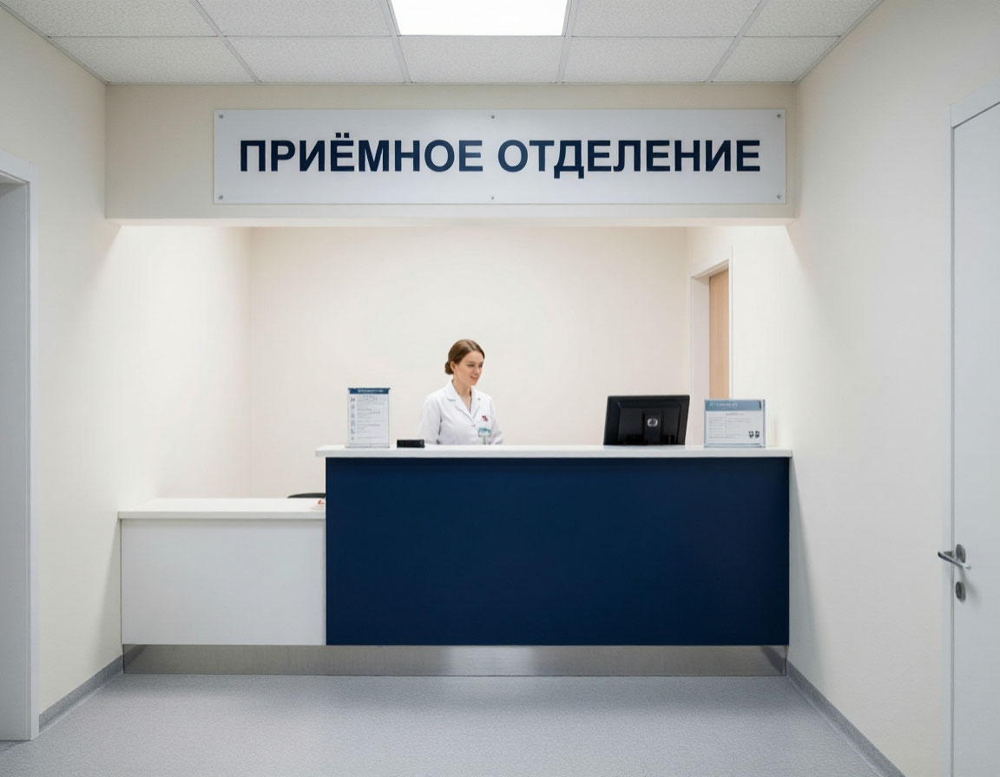

Почему выбирают наш госпиталь

Опыт и традиции
Более 80 лет оказываем помощь защитникам Отечества. Преемственность научных школ и клинических кафедр.

Высокие технологии
Магнитно-резонансный томограф 3 Тесла, компьютерный томограф 128 срезов, роботизированная хирургическая система, лаборатория экспертного класса.

Специализация на боевой травме
Уникальный опыт лечения минно-взрывных и огнестрельных ранений. Передовые методики протезирования и реабилитации.

Врачебный состав
85% специалистов имеют первую и высшую квалификационные категории. В штате — 12 докторов медицинских наук и 28 кандидатов медицинских наук.
Основные отделения

Травматология и ортопедия
Эндопротезирование крупных суставов, остеосинтез переломов любой сложности, артроскопические вмешательства. Лечение последствий боевых травм опорно-двигательного аппарата.
Перейти в отделениеНейрохирургия
Оперативные вмешательства на головном и спинном мозге. Микрохирургия периферических нервов. Лечение черепно-мозговых травм и минно-взрывных ранений.
Перейти в отделение
Челюстно-лицевая хирургия
Реконструктивно-восстановительные операции при травмах лица и челюстей. Дентальная имплантация. Устранение дефектов мягких тканей и костных структур.
Перейти в отделение
Реабилитация и физиотерапия
Индивидуальные программы восстановления после ранений и протезирования. Лечебная физкультура, механотерапия, физиотерапевтические процедуры. Психологическое сопровождение.
Перейти в отделение
Кардиология
Диагностика и лечение заболеваний сердечно-сосудистой системы. Электрокардиография, эхокардиография, суточное мониторирование. Терапия артериальной гипертензии и ишемической болезни сердца.
Перейти в отделение
Диагностическая база
Магнитно-резонансная томография 3 Тесла, мультиспиральная компьютерная томография 128 срезов, рентгенография, ультразвуковые исследования экспертного класса. Клинико-биохимическая лаборатория выполняет полный спектр анализов.
Перейти в отделениеПациентам и посетителям

Часто задаваемые вопросы
Запись осуществляется через электронную форму на официальном сайте (раздел «Запись и сервисы») или по телефону справочной службы +7 (495) 765-43-21. Военнослужащим необходимо иметь направление по форме 057/у-04. Гражданские лица могут записаться при наличии полиса ОМС, ДМС или на платной основе.
Паспорт (или военный билет/удостоверение личности военнослужащего), полис ОМС/ДМС (при наличии), направление на госпитализацию, выписка из амбулаторной карты, результаты предыдущих обследований. Для военнослужащих — дополнительно направление из воинской части.
Да, посещения разрешены в установленные часы: будние дни с 16:00 до 19:00, выходные и праздничные дни с 10:00 до 13:00 и с 16:00 до 19:00. При себе необходимо иметь паспорт. Допуск в отделение реанимации — по согласованию с лечащим врачом.
Да, в структуре госпиталя функционирует отделение психологической и психиатрической помощи. Специалисты работают с посттравматическим стрессовым расстройством (ПТСР), тревожно-депрессивными состояниями. Прием строго конфиденциален.
Лечебное питание предоставляется всем пациентам стационара бесплатно. Разработано несколько вариантов диетических столов в соответствии с медицинскими показаниями. С актуальным меню-раскладкой можно ознакомиться в разделе «Пациентам».
Запись на приём
Электронная регистратура позволяет записаться на приём к врачу онлайн. Выберите отделение, специалиста и удобное время. Подтверждение записи поступит на ваш телефон.
Перейти к записи